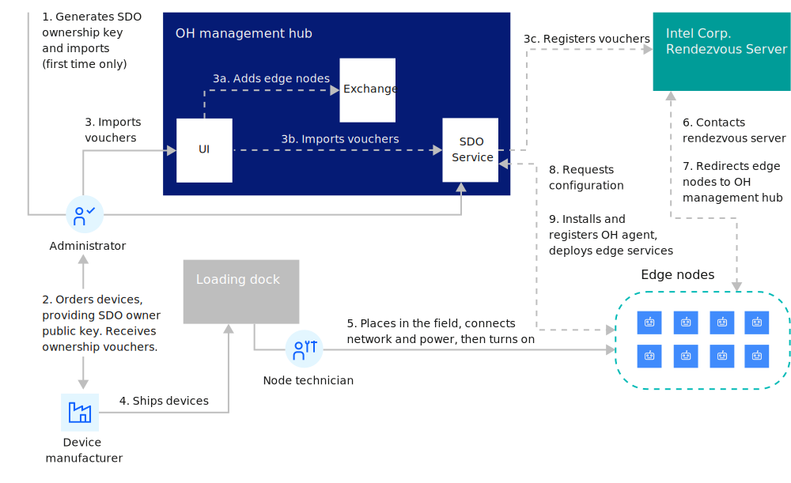

SDO agent installation and registration
SDO  (Secure Device Onboard), created by Intel, makes it easy and secure to configure edge devices and associate them with an edge management hub. Open Horizon (Open Horizon) supports SDO-enabled devices so that the agent will be installed on the devices and registered to the Open Horizon management hub with zero touch (by simply powering on the devices).
(Secure Device Onboard), created by Intel, makes it easy and secure to configure edge devices and associate them with an edge management hub. Open Horizon (Open Horizon) supports SDO-enabled devices so that the agent will be installed on the devices and registered to the Open Horizon management hub with zero touch (by simply powering on the devices).
SDO overview
SDO consists of these components:
- The SDO module on the edge device (usually installed there by the device manufacturer)
- An ownership voucher (a file that is given to the device purchaser along with the physical device)
- The SDO rendezvous server (the well-known server that an SDO-enabled device first contacts when it starts the first time)
- SDO owner services (services run on the Open Horizon management hub that configure the device to use this specific instance of Open Horizon)
Note: SDO only supports edge devices, not edge clusters.
SDO flow

Before you begin
SDO requires that the agent files are stored in the Cloud Sync Service (CSS). If this has not been done, ask your administrator to run edgeNodeFiles.sh ALL -c -p edge-packages-4.2.0 (described in Gather edge node files).
Trying SDO
Even before you purchase SDO-enabled edge devices, you can try out the SDO support in Open Horizon with a VM that simulates an SDO-enabled device:
-
You need an API key. See Prepare for setting up edge nodes for instructions to create an API key, if you do not already have one.
-
Contact your Open Horizon administrator to get the values of these environment variables. (You need them in the next step.)
export HZN_ORG_ID=<exchange-org> export HZN_EXCHANGE_USER_AUTH=iamapikey:<api-key> export HZN_SDO_SVC_URL=https://<ieam-mgmt-hub-ingress>/edge-sdo-ocs/api export HZN_MGMT_HUB_CERT_PATH=<path-to-mgmt-hub-self-signed-cert> export CURL_CA_BUNDLE=$HZN_MGMT_HUB_CERT_PATH -
Follow the steps in the open-horizon/SDO-support repository
 to try out SDO and see it automatically install the Open Horizon agent on a device and register it with your Open Horizon management hub.
to try out SDO and see it automatically install the Open Horizon agent on a device and register it with your Open Horizon management hub.
Adding SDO-enabled devices to your Open Horizon domain
If you have purchased SDO-enabled devices and want to incorporate them into your Open Horizon domain:
-
If you did not create SDO owner key pairs when trying out SDO in the previous section, perform these steps:
-
You need an API key. See Prepare for setting up edge nodes for instructions to create an API key, if you do not already have one.
-
Contact your Open Horizon administrator to get the values of these environment variables. (You need them in the next step.)
export HZN_ORG_ID=<exchange-org> export HZN_EXCHANGE_USER_AUTH=iamapikey:<api-key> export HZN_SDO_SVC_URL=https://<ieam-mgmt-hub-ingress>/edge-sdo-ocs/api export HZN_MGMT_HUB_CERT_PATH=<path-to-mgmt-hub-self-signed-cert> export CURL_CA_BUNDLE=$HZN_MGMT_HUB_CERT_PATH -
Perform the steps in just this one section: Generate Owner Key Pairs
.
-
-
Log in to the Open Horizon management console and click Add node.
-
Fill in the necessary information to import the ownership vouchers you received when you purchased the devices.
-
Connect the devices to the network and power them on.
-
Back in the management console, watch the progress of the devices as they come online by viewing the Node overview page and filtering on the installation name you provided in step 1.